企業虛擬化平台的另類選擇 - Proxmox Virtual Environment 實戰

作者簡介：顧武雄， Microsoft MVP、MCITP 與 MCTS 認證專家、台灣微軟 Technet、Tech Day、Webcast、MVA 特約資深顧問講師。目前個人 Linux 著作有 Linux 企業現場應用系統、Linux 私有雲社群網路現場實戰。
引言：Proxmox VE 是一套基於 Debian Linux 核心的開放原始碼虛擬化平台，透過它內建的作業系統虛擬化技術 (Container) 以及 Hypervisor 虛擬化技術 (Virtual Machine)，兩者強力的結合應用之下，提供企業 IT 一個全方位、易於管理、功能強大且低成本的私有雲端基礎建設。
簡介
相信在絕對大多數的 IT 人員印象中，公司若想要部署私有雲端的虛擬化平台，在以 Windows Server 為基礎的選擇是 Hyper-v，而在以 Linux 核心為基礎的則是 VMWare vSphere Hypervisor、Citrix XenServer 或是輕巧型的 KVM (Kernel-based Virtual Machine)，以上這一些解決方案從管理面、效能面、功能面，一直到整體投資成本的考量，可以說是各有各的優缺點。在此如果您希望能夠有一個兼顧以上四大面向的虛擬化平台方案，不妨可以參考一下接下來本文所要實戰講解的 Proxmox Virtual Environment，因為它在技術層面上不僅提供了 OpenVZ 與 KVM 兩種虛擬化技術的運行，也提供了各類儲存系統的整合以及高可用性的叢集 (HA Clustering) 架構設計。而在原廠技術支援、教育訓練以及更新管理需求上，也提供了從基本 (BASIC) 到白金級 (PREMIUM) 的專業付費服務選擇，可以做為企業部署私有雲端平台時的強力後盾。
Proxmox Virtual Environment（簡稱 Proxmox VE）是一個開放原始碼的專案套件，其目前維護與開發的廠商便是 Proxmox，此公司不僅是提供了伺服器管理的虛擬化平台解決方案，也提供了郵件安全閘道 (Mail Gateway) 的相關產品，值得注意的是它所發展的 Mail Gateway 產品，除了有提供一般 ISO 映像檔的下載之外，還有提供直接可運行在 OpenVZ 虛擬化平台下的 Appliance 檔案。
究竟什麼是 OpenVZ 呢？其實它就是一個 Linux 平台下以容器架構為基礎 (container-based) 的虛擬化技術，Proxmox VE 早在 2008 年開始就使用它在虛擬化平台技術的專案之中。透過與 OpenVZ 的結合，可協助系統管理人員在一部實體的伺服器上建立多個安全且獨立運行的容器，我們也可以稱它為 VEs (Virtual Environment Server) 或 VPs (Virtual Private Server)，它們可以有各自的系統管理員、一般使用者、群組、IP 位址配置、執行緒、記憶體、應用程式、系統程式以及設定檔等等。
最新 Proxmox Virtual Environment 下載網址：https://www.proxmox.com/downloads
Proxmox Virtual Environment 的 Wiki 網址：https://pve.proxmox.com/wiki/Main_Page
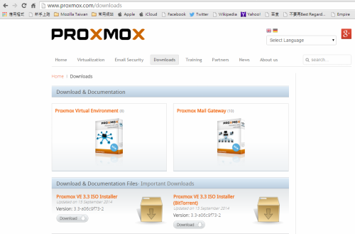
▲圖 1：Proxmox 官方下載網站
整體而言 Proxmox VE 在雲端虛擬化平台的技術上，提供了以下幾個主要功能：
- 同時提供開機安裝版 (Bare-metal) 以及可安裝在現行 Debian 系統下的 Proxmox VE 套件，讓系統建置人員可以彈性規劃符合企業 IT 需要的磁碟分割區。
- 提供以 KVM 虛擬機器技術為基礎的管理平台。
- 提供以 Container-based 為基礎的 OpenVZ 虛擬化技術。
- 可執行不停機的 Live Migration 虛擬機器線上移轉。
- 提供高可用性的叢集技術，讓運行在 HA 架構下的虛擬機器，可以在單一節點因故停擺時，自動重新啟動在另一個可用節點上繼續運行。
- 提供以 Web 為基礎的管理中心，來集中控管整個私有雲端中的 Proxmox VE 伺服器。
- 在虛擬網路的連線方式上，採用了以橋接網路的模式 (bridged networking) 來與實體網路進行連線。
- 內建線上的備份與還原功能，所支援的儲存系統包含了 NFS、iSCSI LUN、Ceph RBD、Sheepdog 等等。
- 提供 REST web API 方便第三工具軟體進行整合應用。
- 提供以角色為基礎的人員權限配置。
- 延伸支援整合 Microsoft Active Directory、LDAP、Linux PAM 帳戶驗證機制。
- 官方網站上提供了超過五十個以上的 Virtual Appliances，這一些已經打包好的 Appliances，由於已經預先安裝好與設定好的所需要的系統以及應用程式，因此可以直接運行在 OpenVZ 的容器之中。
接下來就讓我們實際來學一下 Proxmox VE 3.3 版本，從安裝設定到 Virtual Machine 與 Container 的建置使用。
Proxmox VE 安裝指引
當您打算透過建置 Proxmox VE 來運行 Virtual Machine 與 Container，在此有官方所建議的最小硬體規格要求，請參考如下：
- 使用 64 位元的雙核心以上的 CPU (Intel EMT64 or AMD64)。
- 安裝在支援 Intel VT / AMD-V 主機上，並且已 BIOS 中啟用此功能。
- 使用至少 8GB 以上的實體記憶體。
- 安裝在以 SAS 硬碟 (15k rpm) 為主的磁碟陣列上 (RAID 10)，兼顧 I/O 效能與資料保護。
- 使用雙網卡連線，以便能夠建立擁有叢集容錯的架構設計。
此外若是您只是在測試階段，您可以考慮將它安裝在 VMware Workstation 10 以上的版本虛擬化環境之中，來建立所謂的巢狀虛擬化平台，同樣可以進行各項虛擬化技術功能的測試。接下來我們在安裝設定的講解部分，將以最多人使用的開機安裝版本來作為操作示範。
如圖 2 所示，便是 Proxmox VE 開機安裝版的啟動畫面，在此可以看到他的版本編號以及官方網址，直接按下 [Enter] 鍵將可以進入安裝設定頁面。在啟動的過程之中，它會提示我們如果想要檢視完整的啟動資訊，只要按下 [F2] 鍵即可。

▲圖 2：Proxmox VE 開機安裝光碟
在授權聲明的同意頁中，請點選 [I Agree] 即可繼續。來到如圖 3 所示的頁面中，將可以在中間下方位置之中，看到此系統即將安裝的目標硬碟（例如：/dev/sda）。必須注意的是在安裝的過程之中，將會自動清除目標磁碟中的所有資料與分割區。確認後點選 [Next] 繼續。
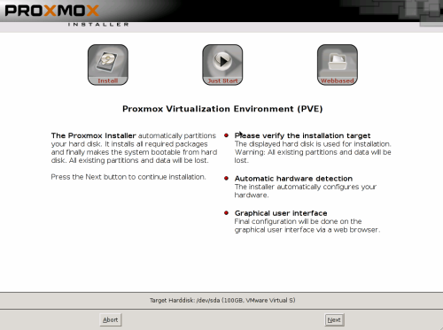
▲圖 3：安裝提示訊息
在如圖 4 所示的 [Location and Time Zone selection] 頁面中，必須分別設定所在的國家、時區以及鍵盤配置方式。在此我們依序輸入與選取了 Taiwan、Asia / Taipei、US English。值得注意的是關於國家的設定，將有助於系統自動尋找最鄰近的官方雲端主機，來加速進行往後更新程式的下載。點選 [Next] 繼續。
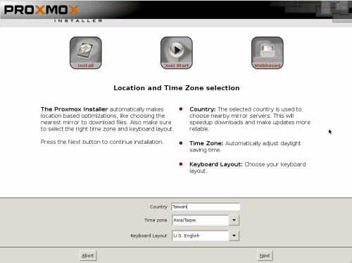
▲圖 4：時區與鍵盤設定
在如圖 5 所示的 [Administration Password and Email Address] 頁面中，請輸入系統預設的管理員帳戶密碼以及 Email 地址，如此一來後續在完成安裝之後，才能夠以預設的管理員密碼來登入，並且對於平日的運行維護，一旦有重要的系統事件發生時，就能夠主動以 Email 來通知管理員。點選 [Next] 繼續。
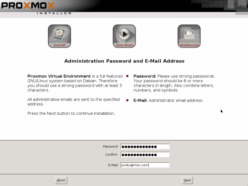
▲圖 5：管理員密碼與 Email 設定
在如圖 6 所示的 [Network Configuration] 頁面中，必須分別設定此主機的完整網域名稱 (FQDN)、IP 位址、子網路遮罩 (Netmask)、閘道位址 (Gateway)、DNS 伺服器位址。其中 DNS 伺服器位址，一般都是輸入內部的 DNS 伺服器位址，以利於後續與其它系統的連線整合時，才能夠彼此透過 FQDN 的位址連線方式來進行通訊。提升網路連線的安全與簡化網路的管理。點選 [Next] 繼續。
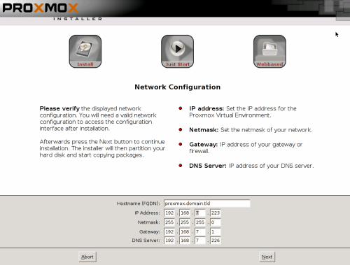
▲圖 6：網路設定
接下來將會進入開始複製系統與程式檔案的進度頁面，過程之中可以看到頁面中，還會出現對於 Proxmox VE 這套系統的關鍵功能介紹。其中最重要的就是它同時提供了兩種虛擬化技術，分別是 Container 與 KVM。而 Container 下所運行的 Linux 系統之效能表現，相較於標準伺服器僅會減少大約 1% 至 3% 左右。如圖 7 所示則是已成功完成安裝的顯示頁面，點選 [Reboot] 來立即重新啟動。
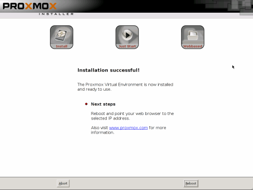
▲圖 7：完成 Proxmox VE 安裝
重新啟動系統之後將可以看到 Proxmox VE 的啟動選單，如圖 8 所示在上方位置可以看到目前使用的 GNU GRUB 版本。在選項部分正常狀況下只要選擇第一個啟動項目即可。至於其它選項則是主要用於復原模式的啟動以及記憶體的測試時使用。若是按下 c 按鍵將可以進入命令模式的操作。
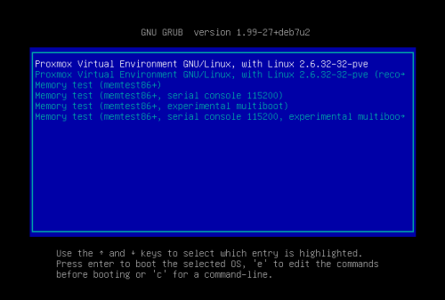
▲圖 8：Proxmox VE 啟動選單
如圖 9 所示便是成功啟動後的顯示訊息，內容中除了可以看到 Proxmox VE 伺服器的管理網站連線位址之外，您可以馬上嘗試以及 root 的身份與安裝過程中所設定的密碼來進行登入，若是登入成功等一下就可以同樣使用這組預設帳密，來登入管理網站了。
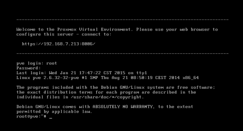
▲圖 9：完成啟動頁面
如圖 10 所示預設 Proxmox VE 的網站連接埠為 8006，成功連線時將會出現登入驗證視窗。在此您可以選擇驗證的方式 (Realm) 有 Linux PAM stanard authentication 與 Proxmox VE authentication Server，預設狀態下皆是採用前者，如果想要更安全的集中控管方式，未來則可以考慮架設一台 Proxmox VE 專屬的帳戶驗證伺服器。在介面語言部份由於目前尚未支援繁體中文，因此建議您選擇預設的 [English] 即可。完成預設管理員帳戶以及密碼的輸入之後，點選 [Login]。
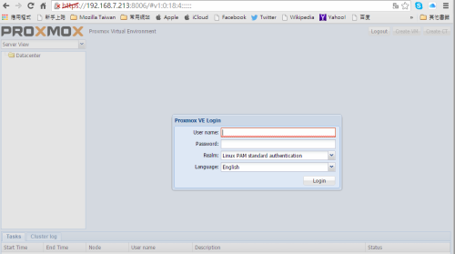
▲圖 10：連線登入 Web 主控台
在您初次登入時可能會出現如圖 11 所示的原廠支援訂閱提示，可以點選其中的 www.proxmox.com 超連結，來查看一下官方對於額外技術支援所提供的服務項目。
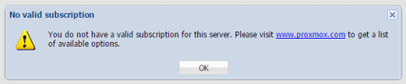
▲圖 11：原廠支援訂閱提示
如圖 12 所示來到 PROXMOX 官方訂閱方案的介紹網站時，可以發現企業除了可以享用免費的 Proxmox VE 虛擬化平台之外，還可以根據實際部署規模的需要，來選擇四種不同等級的服務訂閱，分別是社群 (COMMUNITY)、基本 (BASIC)、標準 (STANDARD) 以及白金級 (PREMIUM)。其中社群的服務等級僅提供官方網站討論區中的支援服務，以及提供企業程式庫與相關軟體更新的權限，盡管如此相信已經可以滿足台灣許多中小企業的需要。至於白金級的服務則是提供了不限點數的技術支援，並且加贈客戶專屬的入口網站存取服務。
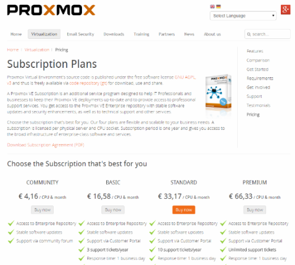
▲圖 12：官方付費支援訂閱服務
如圖 13 所示便是成功登入後的 Proxmox VE 管理網站。在系統預設的狀態下，不會有任何虛擬機器 (VM) 與虛擬容器 (Container) 的存在，而可用的儲存區也只會有一個本機的硬碟空間。之後企業IT將可以根據 VM 與 Container 需求量的不斷增加下，來加入更多的 Proxmox VE 伺服器在相同的資料中心，必要的話還可以建立高可用性 (HA) 的叢集運作架構。
未來無論是對於資料中心、伺服器主機還是各別 VM 以及 Container 的管理，其執行作業中的訊息，都將會出現在下方窗格的 [Task] 頁籤之中，至於 [Cluster log] 頁籤，則是用以顯示與叢集管理有關的訊息。
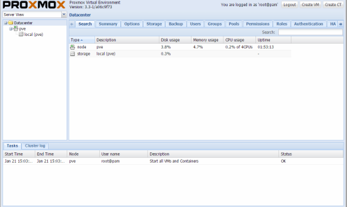
▲圖 13：Proxmox VE 主控台網站
動手建立一個新的虛擬機器
接下來我們可以來嘗試建立一個最簡單的單機運行 VM。請點選位在網站管理介面右上方的 [Create VM] 按鈕。此時將會開啟如圖 14 所示的 [Create Virtual Machine] 頁面。首先在 [General] 頁面設定中，必須先選擇此 VM 要建立的所在伺服器節點 (Node)，然後給它一個唯一的虛擬機器識別碼 (VM ID) 以及虛擬機器名稱。至於資源集區 (Resource Pool)，預設是沒有任何項目可以選擇的，未來我們可以在虛擬機器數量越來越多之時，透過多個自訂集區的建立，來依據虛擬機器的重要等級，加以分配到不同資源限制的集區之中，如此一來有限的硬體資源將可以受到有原則性的妥善分配管理。點選 [Next] 繼續。
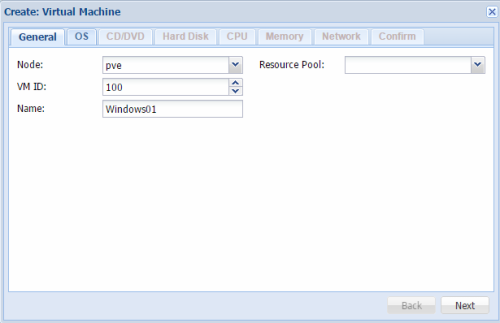
▲圖 14：新 VM 一般設定
在如圖 15 所示的 [OS] 頁面中，必須選擇即將安裝的虛擬機器 Guest OS 類型與版本。在此主要區分為 [Microsoft Windows] 與 [Linux / Other OS types]。其中 Windows 的支援部分，可以發現這個版本目前已支援 Windows 8 以及 Windows Server 2012 的安裝與運行。至於 Linux 系列的作業系統選擇方式，則與一般常見的虛擬化平台有些不同，在此是以選擇 Linux 或 Solaris 的 Kernel 版本方式來進行配置，而非選擇 Linux 作業系統的產品名稱，例如：CentOS、Ubuntu、Debian、Fedora、 RedHat、SuSE Linux 等等。點選 [Next] 繼續。
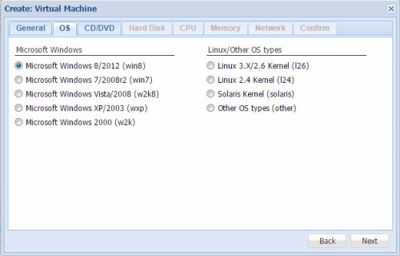
▲圖 15：新 VM Guest OS 選擇
在如圖 16 所示的 [CD/DVD] 頁面中，可以選取安裝 Guest OS 的媒體來源，分別有使用伺服器的實體 CD/DVD 光碟，以及選取已上傳至特定儲存區的 ISO 映像檔。如今的實體 CD/DVD 光碟片已經很少人在使用，大多採用由 OS 原廠所提供下載的 ISO 檔案來進行安裝。然而在預設的狀態下我們從 [ISO Image] 下拉選單之中，是看不到任何可用的 ISO 檔案，並且也無法直接從這裡進行上傳，只能夠在完成虛擬機器的建立之後，再到相對的儲存區管理頁面中來進行上傳。點選 [Next] 繼續。
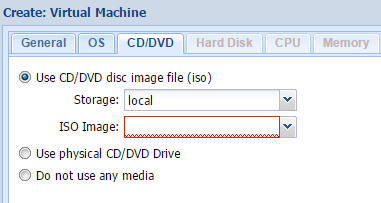
▲圖 16：安裝媒體選擇
在如圖 17 所示的 [Hard Disk] 頁面中，首先可以選擇虛擬硬碟使用的 I/O 介面、儲存裝置位置、虛擬硬碟大小、虛擬硬碟格式，其中格式的選擇分別有原生的 Raw disk image、KVM 專用的 QEMU 格式、VMware 專用的格式。在此如果您的網路環境中還有其它 KVM 或 VMware 系列的虛擬化平台，便可以考慮選擇後兩者格式之一，如此一來有助於未來可能的移轉需要。接著您還可以決定是否要啟用快取功能 (Cache)、關閉備份功能 (No backup) 以及啟用放棄狀態儲存功能 (Discard)，其中 Discard 設定的啟用，將會讓每一次虛擬機器啟動後的任何變更，在虛擬機器關機之後自動恢復原狀，因此相當適合使用在某一些系統軟體的測試需要。點選 [Next] 繼續。
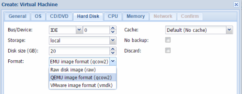
▲圖 17：虛擬硬碟格式設定
在如圖 18 所示的 [CPU] 頁面中，便可以設定虛擬機器的 CPU (Sockets) 以及核心 (Core) 的數量，至於類型採用預設的 KVM64 即可。另外值得注意的是，目前市面上有許多商用的應用系統或資料庫系統，其授權方式有支援以 CPU 核心數量的方式來計價，例如 Microsoft SQL Server 或 IBM Domino Server 等等，但有趣的是並非每一家軟體廠商或產品，都能夠接受以虛擬機器的核心數來計價，也就是說仍有一些產品僅接受採實體伺服器主機的核心數量來計價，關於這點請務必事先與原廠確認後再決議要購買的授權方式。點選 [Next] 繼續。
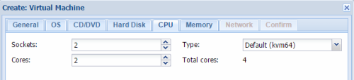
▲圖 18：虛擬處理器設定
在如圖 19 所示的 [Memory] 頁面中，可以自訂此虛擬機器所要使用的記憶體大小，在此建議您如果該虛擬機器所運行的系統負荷較重，並且也是較為重要的營運系統（例如：ERP Server、Mail Server），針對這一類的系統最好是指定固定的記憶體大小，可讓執行的效能更好。而對一些不是非常重要以及負載較輕的虛擬機器運行（例如：共用的 Office Client），便可以指派使用自動配置記憶體的方式執行，因為您只要輸入一個最大與最小的記憶體範圍設定，Proxmox VE 便會自動根據當下虛擬機器的資源利用需要，來自動配置適當的記憶體資源，可以更有效率的管理好有限記憶體的問題。點選 [Next] 繼續。
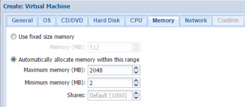
▲圖 19：虛擬記憶體設定
在如圖 20 所示的 [Network] 頁面中，您可以決定在此虛擬機器中對於網路連線的使用方式。一般來說最常使用的就是橋接 (Bridge) 類型，因為它的管理方式最為簡單，而且又可以直接與實體網路中的其它裝置來進行通訊，如果有通訊埠安全控管上的疑慮，則還可以啟動防火牆功能，然後再去配置防火牆的細部安全組態。至於網路位址轉譯 (NAT)，其優點則是可以在不占用公司內部現有網路 IP 位址的情況下，讓 Guest OS 透過自己專屬的IP網段，來與實體網路的裝置進行通訊。進一步您還可以決定虛擬網路卡的模組類型（例如：Intel E1000）、MAC 位址以及每秒的頻寬限速。若是初步完全不要使用到任何網路連線，則可以暫時先勾選 [No network device] 設定即可。點選 [Next] 繼續。
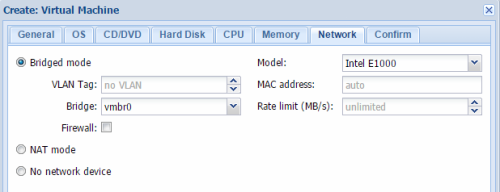
▲圖 20：虛擬網路連線設定
在如圖 21 所示的 [Confirm] 頁面中，可以看到前面所有步驟的設定值，若有發現設定不妥之處，像是虛擬硬碟的 I/O 介面選擇，或是 Guest OS 的類型等等，都可以點選 [Back] 來回頭進行修正。否則請點選 [Finish] 完成設定即可。
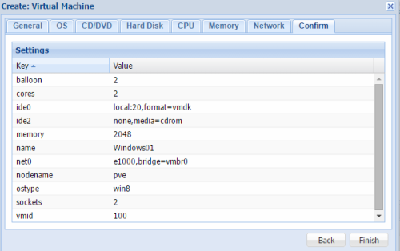
▲圖 21：新 VM 設定確認
安裝新虛擬機器客體作業系統
完成虛擬機器的建立之後，接下來就要來開始準備安裝其中的 Guest OS。還記得在前面的操作中我們尚未指定安裝媒體，因此得先把相關的 ISO 映象檔上傳到儲存區之中，在此由於我們目前僅有一部 Proxmox VE 伺服器，所以必須開啟如圖 22 所示的本機 (local) 儲存區頁面，請在點選至 [Content] 頁面中之後，點選 [Upload] 繼續。
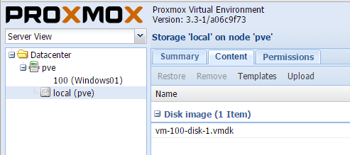
▲圖 22：本機儲存區管理
在如圖 23 所示的 [Upload] 頁面中，可以先從 [Content] 下拉選單中，挑選準備上傳的檔案類型，目前可用選項有 ISO image、VZDump backup file 以及 OpenVZ template，在此請選取 [ISO image] 並且點選 [Select File]，來選取準備上傳的 Guest OS之ISO 檔案。點選 [Upload] 即可。
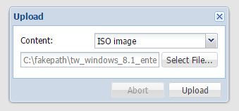
▲圖 23：上傳 ISO 映像檔
如圖 24 所示便是成功完成一個 ISO 映象檔上傳的範例，在這個 [Content] 頁面之中，可以發現不同的檔案類型，系統將會自動進行分類顯示，其中的 vm-100-disk-1.vmdk 檔案，便是我們建立第一個新虛擬機器時，所產生的虛擬硬碟檔案，其格式為 VMware 的標準格式。對於未來所陸續上傳的檔案，包括 Container 範本檔以及備份檔案，同樣也會自動顯示在不同的分類區域之中。
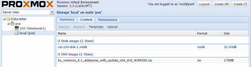
▲圖 24：確認上傳結果
完成了 Guest OS 的 ISO 映像檔上傳之後，就可以開啟位在虛擬機器節點中的 [Hardware] 頁面。如圖 25 所示請在選取 [CD/DVD Drive] 項目之後，點選 [Edit] 繼續。

▲圖 25：虛擬機器硬體管理
在如圖 26 所示的 [Edit：CD/DVD Drive] 頁面中，便可以選取 [Use CD/DVD disc image file (iso)] 設定之後，從 [Storage] 選單中選擇 [local]，然後再挑選準備安裝使用的 ISO 映像檔案即可。點選 [OK]。
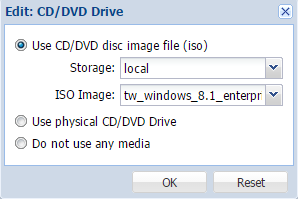
▲圖 26：編輯 CD/DVD 設定
緊接著請切換到如圖 27 所示的 [Options] 頁面中，在選取 [Boot order] 項目之後，點選 [Edit] 繼續。
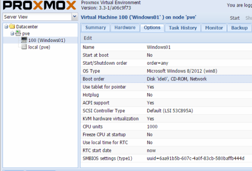
▲圖 27：虛擬機器選用設定
在如圖 28 所示的 [Edit：Boot order] 頁面中，便可以設定不同開機媒體的先後順序，在此請將 [CD-ROM] 選項設定在順序 1 的位置。等到 Guest OS 完成安裝之後，就可以改將 Disk’Ide0’ 設定在順序 1 的位置。值得注意的是，未來如果需要重新安裝或是要修復 Guest OS 系統，便可能需要再一次將相對的 ISO 映像掛載進來，並且把 CD-ROM 設定順序 1 的位置，以便啟動 Guest OS 的全新安裝，或是進行像 Windows 7、Windows 8 以及 Windows Server 2012 等作業系統，所提供的修復安裝功能。
此外還必須特別注意的是，日後若是需要調整虛擬機器的硬體配置，在大部分的情況之下，都是需要在虛擬機器關機的狀態中，才能夠對於位在 [Hardware] 以及 [Options] 頁面中的各項設定值進行修改。
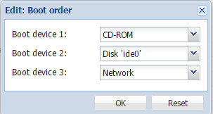
▲圖 28：設定開機裝置順序
確認完成了 ISO 映像檔的掛載以及開機啟動順序的設定之後，就可以在此虛擬機器上方按下滑鼠右鍵並點選 [Start]，來立即啟動虛擬機器電源。然而在啟動的過程中如果在下方的 [Tasks] 訊息窗格之中，出現了如圖 29 所示的 [ERROR：No accelerator found] 錯誤訊息，即表示兩種可能的原因。第一種是您雖然是把 Proxmox VE 系統安裝實體的電腦主機上，但卻沒有事先在 BIOS 的 CPU 進階設定之中，啟用虛擬化技術的相關功能。
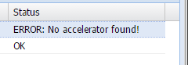
▲圖 29：啟動失敗
至於第二種的可能原因，則是您選擇將 Proxmox VE 安裝在 VMware 系列的虛擬機器之中，形成了所謂的巢狀虛擬測試架構，在這種情況之下除了需要實體主機 BIOS 的 CPU 組態，有啟用了虛擬化技術的功能之外，還必確認已經在如圖 30 所示的 [Virtual Machine Settings] 頁面中，也已經啟用了 [Virtualize Intel VT-x/EPT or AMD-V/RVI] 功能設定，必須注意的是此設定的異動，僅能夠在此虛擬機器關機的狀態下才能夠進行。
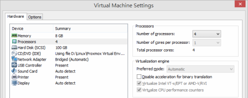
▲圖 30：VMWare Workstation處理器設定
完成虛擬機器的正常啟動之後，請再一次在此虛擬機器上方，按下滑鼠右鍵點選 [Console] 繼續。如圖 31 所示便是筆者成功啟動一個 Windows 8 Guest OS 的安裝範例。整個安裝設定過程同樣，都只要在此 Web 主控台之中就可以完成，而無須加裝其它管理工具。
請注意！關於虛擬機器的電源管理，除了可以透過虛擬機器的右鍵選單來執行之外，也可以經由它的 [Console] 視窗右上方電源按鈕，來執行像是 Start、Shutdown、Stop 等操作。
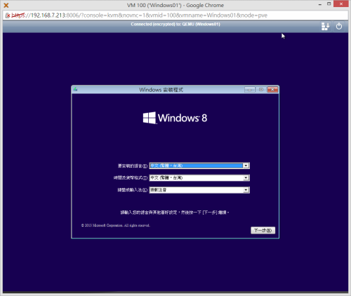
▲圖 31：安裝新 VM 的 Guest OS
關於各別虛擬機器的運行狀態，後續您都可以在如圖 32 所示的 [Summary] 頁面中，來監視 CPU、記憶體、網路等即時負載情況，以便可以隨時根據不同的效能狀態，來調整所需要的各項資源設定。其次則是在此也可以得知此虛擬機器目前已運行的時間，以及是否已加入了叢集高可用性的運作架構之中。
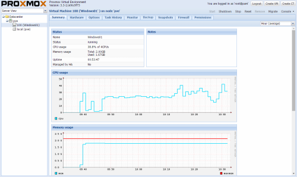
▲圖 32：虛擬機器運行摘要檢視
資料中心儲存區管理
Proxmox VE 虛擬化平台系統對於資料儲存的管理方式，除了有各自伺服器本機的硬碟空間之外，就是可以連線存取近端或是遠端的儲存空間。然而究竟哪一類的檔案資料應該放在單機儲存區之中，哪一些又該放在網路共用的儲存區之中呢？其實很簡單，只要依據檔案的用途便可以決定檔案應該存放的位置。舉例來說，對於所有 Proxmox VE 伺服器都可能會使用到的安裝映像檔、VM 或 Container 的範本檔、叢集架構下會使用到的虛擬硬碟檔案等等，這一些就肯定需要置放在網路共用儲存區之中，至於其他類型的檔案，則可能只需要置放在各自所需要的伺服器本機儲存區之中即可。
想要建立網路共用的儲存區連線，來供 Proxmox VE 資料中心所有伺服器的連線存取，只要先點選至 [Datacenter] 節點，然後切換到如圖 33 所示的 [Storage] 頁面中並點選 [Add] 下拉選單，便可以來挑選所要建立與連線的儲存區類型，分別有 LVM、NFS、iSCSI、Gluster FS、RBD、ZFS。在此筆者建議的最佳作法，就是建立 iSCSI 儲存區來作為後續叢集運作架構下的共用儲存區，至於虛擬機器備份專用的儲存區，肯定是以 NFS 的共用儲存區為最理想。
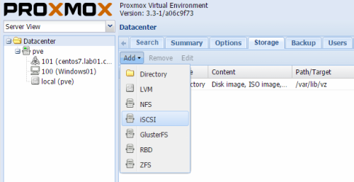
▲圖 33：儲存區管理
如圖 34 所示便是新增 iSCSI 儲存區連線的設定頁面。在此必須輸入 iSCSI Target 儲存主機的識別名稱 (ID)、入口位址 (Protal) 以及選取目標服務 (Target)。當您初次連線時若發現 [Target] 下拉選單中，並沒有出現可用的服務選項，很可能是因為該目標主機尚未授權此 Proxmox VE 伺服器的連線與讀寫，這時候就需要去檢查 iSCSI Target 服務的授權設定。最後請將 [Enable] 與 [Use LUNs directly] 設定勾選，點選 [Add] 即可。
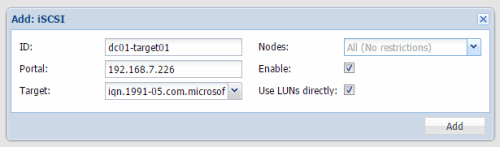
▲圖 34：加入 iSCSI Target 儲存區
一旦成功連線 iSCSI Target 服務主機之後，便可以在如圖 35 所示伺服器節點中，看到多了一個 iSCSI Target 節點，點選後就可以在 [Content] 頁面之中，看到目前此 iSCSI 目標服務中所有已建立的 LUN 儲存區。
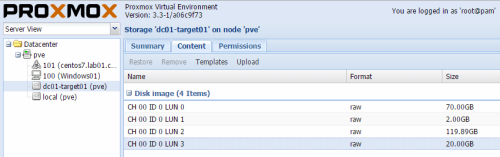
▲圖 35：檢視 iSCSI LUN 清單
建立OpenVZ Container
虛擬機器 (Virtual Machine) 的建立，可以解決雲端中各類型作業系統與應用程式運行的需求，但它畢竟需要占用大量的硬體資源。今日若是我們所需要運行的作業系統以及應用程式，皆是採用以 Linux Kernel 為基礎的架構，那麼部署以 Container 為主的作業系統虛擬化技術，就可以為您解決大量部署的時間以及建置成本。在 Proxmox VE 虛擬化平台上，便是同時支援了以 OpenVZ Container 的虛擬化管理功能，您可以選擇上傳自行建立好的 Container，或是乾脆從網站上去下載一些已建立好的範本檔，來加速大量 Container 的部署需要。
如圖 36 所示在這個 OpenVZ Container 網站上，我們可以找到最新發佈的範本檔案，這包括了 CentOS 7.0、Debian 7.0、Fedora 20、Scientific 6.0、SUSE Linux 13.1、Ubuntu 14.04 等等，而這一些範本檔皆是已經完成安裝與基本設定的系統。進一步查看還可以找到一些還處在 Beta 階段的範本檔，以及一些較舊的作業系統範本檔，像是 CentOS 4.0、Fedora 9.0、Ubuntu 7.0 等等。
無論是哪一個範本檔，您都不需要在下載之後對它們進行解壓縮，只要上傳到您自家的 OpenVZ 儲存區中即可立即享用。在此筆者就可以點選下載最新 CentOS 7.0 的範本檔案，其完整檔名為 centos-7-x86_64.tar.gz，至於檔案大小竟然只有 220MB，別懷疑這就是因為 Container 技術採用了共用作業系統核心虛擬化的因素，因此便不需要再建立一個完整的 Guest OS。
OpenVZ Contaniner 範本檔下載網址：https://openvz.org/Download/template/precreated
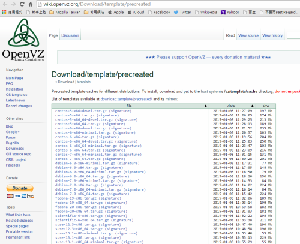
▲圖 36：OpenVZ Container 範本檔下載
來到我們想要置放 Container 範本的儲存區節點頁面中，便可以點選 [Upload] 來開啟如圖37所示的上傳設定，在此請將 [Content] 設定選擇 [OpenVZ template]，然後再點選 [Select File] 按鈕來挑選準備上傳的 Container 範本檔。點選 [Upload] 開始進行上傳作業。
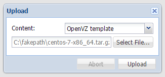
▲圖 37：上傳 OpenVZ 範本檔
如圖 38 所示在儲存區的 [Content] 頁面中，便可以檢視到我們所上傳的 CentOS 7 的Container 範本檔，已被自動分類到 [OpenVZ template] 區域之中。您可以繼續點選 [Upload] 來完成更多 Container 範本檔的上傳。
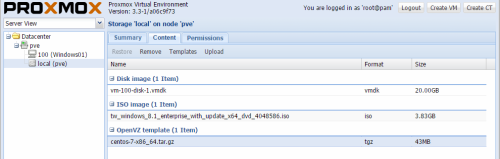
▲圖 38：檢視本機儲存區內容
完成了所需要的 Container 範本檔上傳之後，就可以開始來建立 OpenVZ Container。請點選位在管理介面右上方的 [Create CT]。接著將會開啟如圖 39 所示的 [General] 頁面設定，在此必須分別設定所在的伺服器節點 (Node)、虛擬機器 ID、虛擬系統的主機名稱、存放的儲存區以及預設帳戶 (root) 登入的密碼。至於資源集區 (Resource Pool) 同樣也是選用的，可以留在後續再進行指定即可。點選 [Next] 繼續。
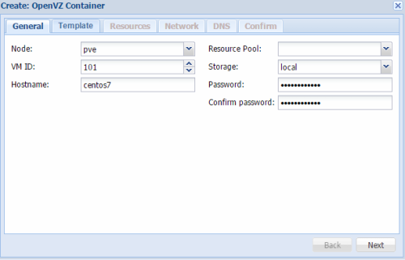
▲圖 39：新 OpenVZ Container 一般設定
在如圖 40 所示的 [Template] 頁面中，必須從現有的儲存區清單之中，挑選準備要部署的 OpenVZ Container 範本檔。在這個範例中，筆者便是指定了一個已上傳至本機儲存區的 CentOS 7 (64bit) 範本檔。點選 [Next] 繼續。
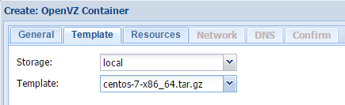
▲圖 40：指定範本檔
在如圖 41 所示的 [Resource] 頁面中，則可以指定此範本檔系統所要配置的各項硬體資源，這包括了記憶體、分頁檔記憶體、磁碟空間以及 CPU 數量。未來如果打算在此作業系統中建立網站服務或資料庫系統，記憶體配置在 4 GB以上肯定會比較理想。點選 [Next] 繼續。
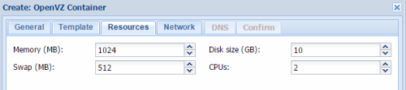
▲圖 41：OpenVZ Container 資源配置
在如圖 42 所示的 [Network] 頁面中，可以指定此虛擬系統連線網路的方式。可以選擇採用路由模式 (Router mode) 或是橋接模式 (Bridge mode)。在橋接模式下如果目前有多個實體網路可以連線，便可以從 [Bridge] 下拉選單之中，挑選所要對應的網路連線。至於如果採用了路由模式，則必須輸入路由的 IP 位址，如此一來才能夠與實體的網路進行通訊。點選 [Next] 繼續。
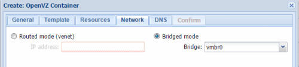
▲圖 42：OpenVZ Container 網路設定
在如圖 43 所示的 [DNS] 頁面中，可以設定此虛擬機器系統的網域名稱，以及所要指向的兩部 DNS 主機 IP 位址。一般來說為了能夠讓系統可以正常與內部以及外部連線，第一部 DNS 主機通常會輸入內部的 DNS 伺服器位址，第二部則是輸入外部的 DNS 伺服器位址，像是 Hinet 的 168.95.1.1 以及 Google 的 8.8.8.8。點選 [Next] 繼續。
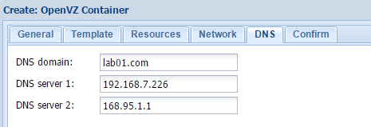
▲圖 43：OpenVZ Container DNS 設定
在如圖 44 所示的 [Confirm] 頁面中，將可以檢視到前面有關於 OpenVZ Container 範本檔部署的各項設定值。確認無誤之後，點選 [Finish] 即可。
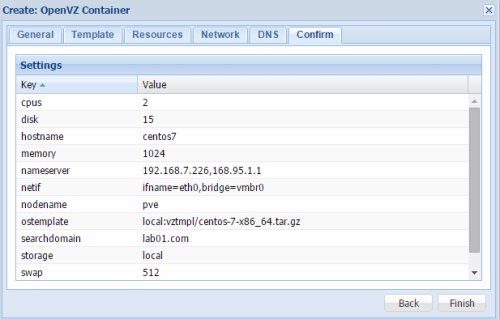
▲圖 44：新 OpenVZ Container 設定確認
在 OpenVZ Container 範本檔部署的過程之中，您可以開啟 [Task viewer] 視窗，來查看目前的部署進度以及狀態。在如圖 45 所示的 [Status] 頁面中，便可以查看到執行中的作業類型、使用者名稱、伺服器節點以及執行緒 ID 等資訊。
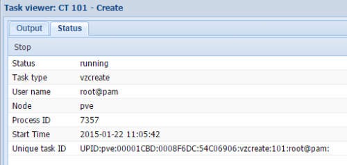
▲圖 45：查看作業執行狀態
當您在如圖 46 所示的 [Output] 頁面中，看到出現了 [TASK OK] 的訊息，便是表示此虛擬機器已經完成了部署，而且還可以得知此虛擬機器容器所存放的實體路徑位置。
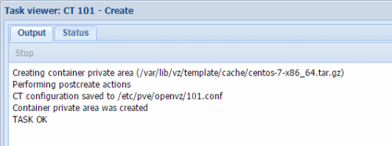
▲圖 46：查看 Container 建立過程
成功部署了 OpenVZ Container 範本檔之後，就可以從 Proxmox VE 管理介面右上方的 [Shell] 下拉選單之中，開啟 [noVNC] 連線工具。如圖 47 所示在此介面中，您只要點選右上方的電源圖示，即可進行此虛擬機器的啟動、關機、停止以及重新載入動作。在此我們就點選 [Start] 來啟動它吧。

▲圖 47：連線 Container
如圖 48 所示便是筆者所成功連線的 CentOS 7 Container 虛擬機器，您只要以部署設定中所輸入的密碼，來使用預設的 root 帳戶登入即可。接下來您就可以開始為此系統，來安裝任何所需要的資料庫套件、應用程式套件。
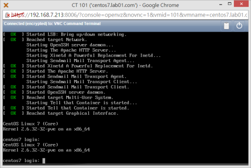
▲圖 48：成功連線登入 Container 系統
其他常用管理功能
在前面的實戰範例中，我們曾經講解過關於虛擬機器上線後運行狀態的監視方法，然而實際上當加入的 Proxmox VE 伺服器愈來越多時，您所要關心的還會有各別伺服器節點的系統運作情形。如圖 49 所示您只要點選至該節點中的 [Summary] 頁面，即可查看到像是已上線的時間、CPU 的使用率、伺服器的負載情形、平均負載統計結果、記憶體使用率、分頁檔使用率、I/O 延遲率、磁碟空間使用率、PVE Manager 與 Linux Kernel 版本資訊等等。以上這一些資訊將有助於確認伺服器的可靠度，必要時將可以依據所缺乏的資源來進行擴充。
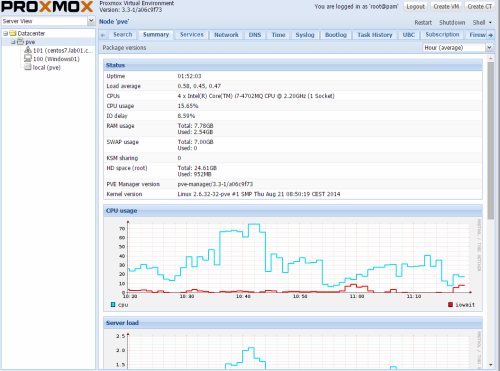
▲圖 49：伺服器運行狀態監視
如圖 50 所示的 [Services] 頁面，則是用以查看目前此伺服器節點中的哪一些服務正在運行。舉例來說，如果目前的 SMTP 服務正在停止狀態，那麼系統管理員將無法收到由系統所發送的任何重要事件訊息，進一步如果是 SSH 服務也在停止狀態，則遠端管理的作業將無法透過 SSH 工具，來以遠端登入的方式進行以命令為主的 Proxmox VE 系統管理。
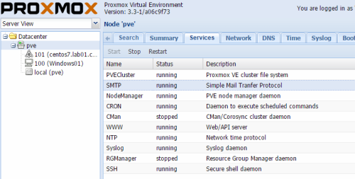
▲圖 50：伺服器服務管理
由於 Proxmox VE 虛擬化平台，同時支援了兩種虛擬化技術，分別是 Virtual Machine 與 OpenVZ Container，因此筆者在本文最後特別使用表 1 來比較他們兩者主要的差異之處。
| 項目 | Container | Virtual Machine |
|---|---|---|
| 基本運作原理 | 將一個作業系統核心安裝在一部伺服器硬體的節點上，然後在這個核心基礎上運行多個虛擬機器，而這裡的每一個虛擬機器皆不是一個完整的作業系統執行個體，而僅僅是執行個體的一部分。 | 每一個虛擬機器皆有一個獨立且完整的客體作業系統來進行運作。 |
| 客體作業系統 | 如果您沒有同時運行多樣化的作業系統之需求，Container 肯定是最佳的虛擬化平台之選擇。 | 幾乎可以同時安裝與使用市面上各式各樣的作業系統在虛擬機器之中來運行。 |
| 一般常見功能 |
|
同左。 |
| 主要優點 | 通常一部標準伺服器硬體，就可以同時搭載上百個以上的容器，相較於以 Hypervisor 為基礎的虛擬機器部署而言，可以節省掉許多建置成本。 | 除了能夠自由建立所需要的各類客體作業系統之外，還可以配置專用的 CPU 核心、記憶體以及磁碟。 |
| 主要缺點 | 無法自行決定系統核心的版本與升級，需要由供應商來管理。無法在單一硬體節點上來運行不同的作業系統類型，例如同時運行 Windows 與 Linux。 | 建置成本會隨著虛擬機器數量的增加而攀高，這包含了實體的伺服器硬體與其周邊網路裝置。 |
| 資源管理 | 通常不需要停機，就可以隨時增加資源配置。但某一些虛擬化系統服務的運行可能仍是需要重新啟動，才能夠識別到新資源的加入。 | 需要在停機的狀態下，才能夠進行調配的，例如硬碟分割區容量的擴充等等。 |
| 安裝方法 | 由於系統配置與應用程式能夠預先封裝好，因此往往只要短短幾分鐘，甚至於幾秒鐘的時間就可以完成虛擬系統的建立。 | 如果沒有預先建立好作業系統的範本檔，從系統到應用程式的安裝，將可能花費數十分鐘至數小時。 |
| 常見的虛擬化平台 | OpenVZ、Linux Containers Docker、Parallels Virtuozzo Containers。 | KVM、XenServer、VMware、Hyper-v、VirtualBox。 |
| 授權方式 | 作業系統的授權包含在 Container 的售價之中。 | 作業系統的授權通常是需要額外購買，或是根據作業系統的廠商所提供的購買規則來進行。 |
▲表 1：Container 與 Virtual Machine 虛擬化技術比較
結論
關於 Proxmox VE 所能夠展現的虛擬化平台控管技術，當然不是僅有本文所介紹的基本功能，未來筆者還會持續介紹有關它在角色的安全管理、叢集高可用性的部署、線上備份與還原、整合 Active Directory 帳戶驗證機制以及結合行動裝置 App 的管理技巧等等。值得注意的如果是由其它虛擬化平台所建立的 Virtual Machine 與 Container，是否也能夠移轉到此平台上來運行呢？這肯定會是一個相當有趣的研究方向，也會是許多企業 IT 想知道的答案。